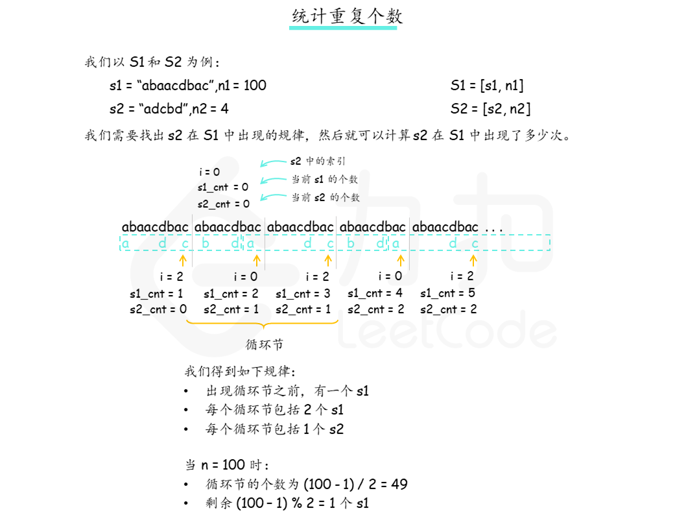
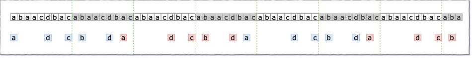
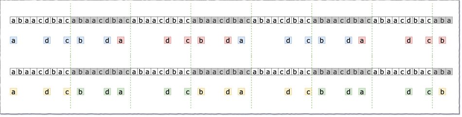

leetcode466 统计重复个数，涉及算法：循环优化，循环节
题目描述
由 n 个连接的字符串 s 组成字符串 S，记作 S = [s,n]。例如，["abc",3]=“abcabcabc”。
如果我们可以从 s2 中删除某些字符使其变为 s1，则称字符串 s1 可以从字符串 s2 获得。例如，根据定义，”abc” 可以从 “abdbec” 获得，但不能从 “acbbe” 获得。
现在给你两个非空字符串 s1 和 s2（每个最多 100 个字符长）和两个整数 0 ≤ n1 ≤ 106 和 1 ≤ n2 ≤ 106。现在考虑字符串 S1 和 S2，其中 S1=[s1,n1] 、S2=[s2,n2] 。
请你找出一个可以满足使[S2,M] 从 S1 获得的最大整数 M 。
示例：
|
解题思路
方法一：找出循环节

理解循环节图示：
进行原始匹配

从匹配队列中找循环节

循环节中一定数量的s1都固定匹配一定数量的s2，可进行批量处理。
代码总体思路：将字符逐一匹配，同时留意循环节的出现，发现循环后对循环部分批量处理，接着继续对剩余部分逐一匹配。
复杂度分析（|s1|、|s2|表示字符串的长度）
时间复杂度：
O(|s1|∗|s2|)。我们最多找过|s2| + 1个 s1，就可以找到循环节，最坏情况下需要遍历的字符数量级为O(|s1|∗|s2|)空间复杂度：
O(|s2|)。我们建立的哈希表大小等于 s2 的长度
|